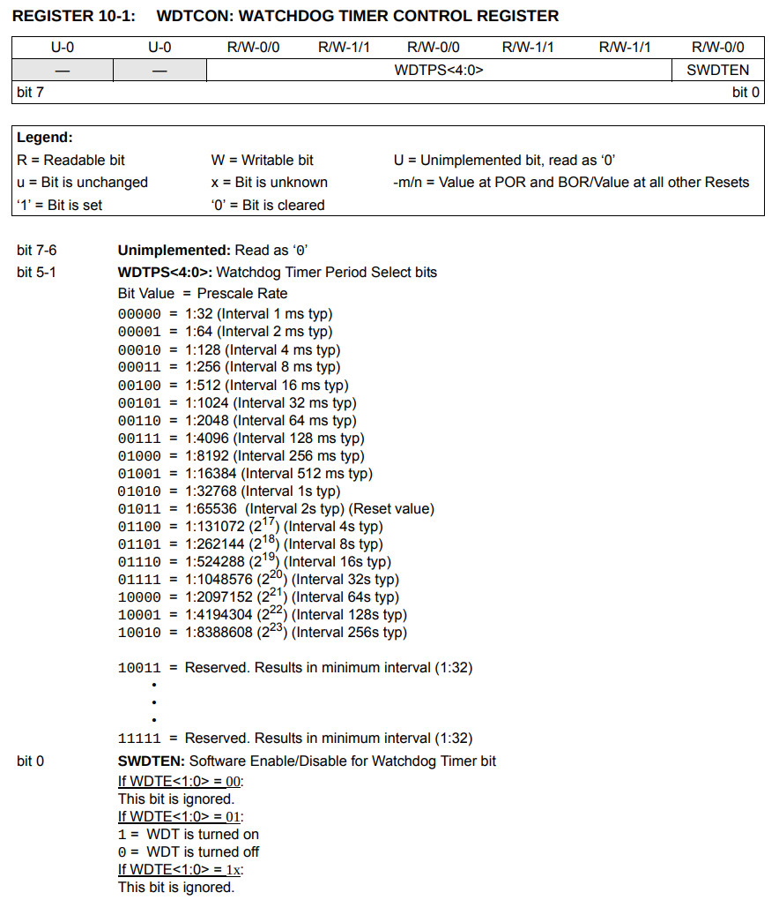
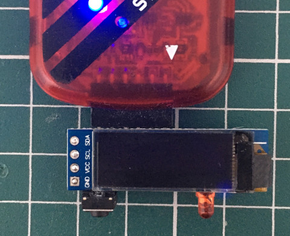
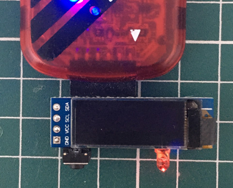

CONFIG1(設定_WDTE_SWDTEN為可透過Register控制WDT)，接著設定Watchdog間隔為一秒，進入Sleep後，等待Reset重啟，達到控制LED閃爍的情形

list p=12f1822, r=hex
#include <p12f1822.inc>
__config _CONFIG1, _FOSC_INTOSC & _WDTE_SWDTEN & _MCLRE_OFF
__config _CONFIG2, _LVP_OFF
org 0x0000
goto start
org 0x0100
start:
banksel TRISA
bcf TRISA, 0
banksel PORTA
bsf PORTA, 0
banksel WDTCON
movlw b'00010101'
movwf WDTCON
sleep
banksel PORTA
bcf PORTA, 0
goto $
end
編譯
$ gpasm main.s
完成

